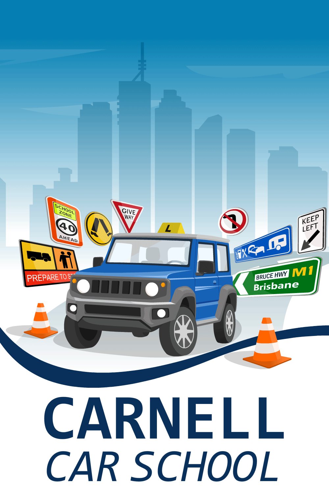
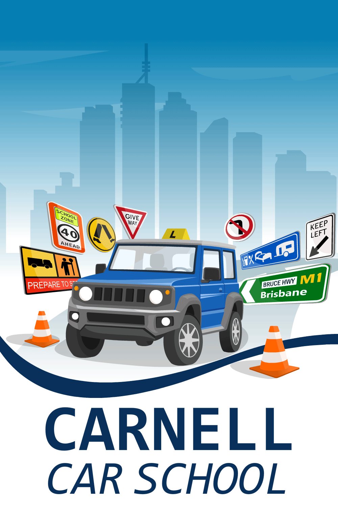

I first started driving in around 1996 on my parents 'farm' long before I was old enough to drive on the road. When I was old enough though, I successfully passed my manual driving test in 2003 with the assistance of a good driving instructor. Then in 2007 I had the opportunity to start driving heavy vehicles professionally in a part-time capacity, so with the help of another good driving instructor I passed my HR Truck driving test and continued driving part-time even after I started teaching in 2009. Since then, I have had the opportunity to drive a large variety of vehicles both professionally and privately in many off-road and on-road situations, whilst also teaching a many different subjects, across all year levels, and in a variety of locations.
I enjoy driving and I enjoy teaching and in early 2018, I had a light-bulb moment, and after consultation with my wife, decided to combine the two and start Carnell Car School. It began with just driving lessons, and in a partnership with parents and other supervisors, over the years I have guided countless students to the joy and independence of being driver's licence holders. However, not long into my driving instructor career, it became apparent that there was a lot more knowledge and there were a lot more skills surrounding driving that learners and the general public could gain that would make them safer vehicle operators. With that revelation, a plan was put in place to offer Offroad Driver Training, Skid Pan Experiences and Basic Maintenance Courses, at a reasonable price, under the Carnell Car School umbrella.
It took some time, and some false starts, but I am proud to say that Carnell Car School now offers all of the above courses, in addition to the very successful, individually-focused, manual driving lessons that have been the back-bone of the Carnell Car School business for many years.
With a slightly lower-than-standard gear ratio and an engine designed to produce lots of torque low in the rev-range, the Jimny is less likely to stall than most other small vehicles on the roads today. This all contributes to a simpler, easier and more straight-forward driving experience with Carnell Car School.
This late model Jimny has a manual gearbox, fitted with bar-type instructor pedals (Dual Controls Queensland) and a full set of instructor mirrors.
Automatic or Manual lessons in your own car are by negotiation. Please contact David to talk through the requirements if you wish to take lessons in your own vehicle.
Carnell Car School offers a wide array of driver education and instructional services. Please note all courses and lessons to be paid for by Cash or Bank Transfer.